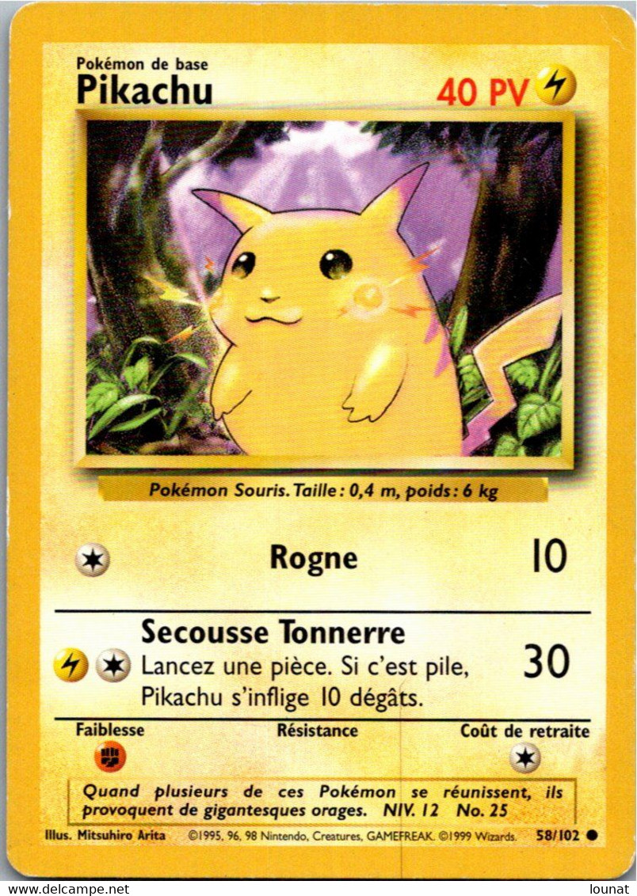

Règles du jeu
Le jeu de cartes à collectionner Pokémon fait s'affronter 2 joueurs. Chaque joueur a son propre deck de 60 cartes (on peut mettre au maximum 4 cartes avec le même nom dans un deck). Votre but est de récupérer 6 cartes récompenses pour gagner la partie : chaque fois que vous mettez un Pokémon adverse KO, vous récupérez 1 carte récompense. Les joueurs jouent chacun leur tour jusqu'à ce que l'un des deux gagne.
Zones de jeu
Chaque joueur possède plusieurs zones pour placer ses cartes :
- Main : vous pouvez regarder et manipuler les cartes de votre main sans les montrer à votre adversaire.
- Zone de cartes récompenses : c'est ici que se trouvent vos cartes récompenses (face cachée). Quand vous en récupérez une, placez-là dans votre main (sans la montrer à votre adversaire).
- Deck : c'est ici que se trouvent toutes vos cartes avant le début de la partie. C'est depuis le dessus de votre deck que vous piochez vos cartes pour les placer dans votre main (sans les montrer à votre adversaires). Personne n'a le droit de regarder les cartes d'un deck. Certains effets permettent de regarder les cartes du deck : si vous le faites, re-mélangez le deck ensuite.
- Pile de défausse : c'est ici que vont vos cartes quand elles sont défaussées. Elles n'ont pas d'ordre particulier et tout le monde peut les regarder.
- Poste actif : c'est ici que se situe votre pokémon actif.
- Banc : c'est ici que se situent vos pokémons de banc. Votre banc peut contenir au maximum 5 pokémons.
- Zone de stade : quand un joueur utilise un stade, c'est ici qu'il le place. Contrairement aux autres zones, la zone de stade est commune aux deux joueurs.
Début de partie
Chaque joueur mélange son deck et pioche une main de 7 cartes. S'il n'y a aucun pokémon de base dans la main d'un joueur, il la révèle à son adversaire et la re-mélange dans son deck puis re-pioche 7 cartes (il répète cette opération jusqu'à avoir un pokémon de base dans sa main). Une fois que les deux joueurs ont un pokémon de base dans leur main, chaque joueur pioche 1 carte supplémentaire pour chaque fois que son adversaire a obtenu une main sans pokémon de base. Chaque joueur place alors un pokémon de base de sa main sur le poste actif. S'il a d'autres pokémons de base dans sa main, il peut en placer autant qu'il veut sur son banc. Ensuite, chaque joueur retire les 6 cartes du dessus de son deck et les place face cachée dans la zone de cartes récompenses (sans les regarder). On effectue un pile ou face pour savoir qui joue en premier. Pour équilibrer la partie, le joueur qui joue en premier, lors de son premier tour, ne peut ni faire évoluer de pokémon, ni jouer de carte supporter, ni lancer une attaque.
Déroulement d'un tour
Quand c'est votre tour, vous pouvez effectuer autant d'actions que vous voulez parmi celles-ci :
- utiliser une carte énergie de votre main : attachez là à un de vos pokémons actif ou de banc (1 fois par tour maximum)
- utiliser une carte dresseur de votre main : défaussez alors la carte (sauf si c'est un stade ou un outil pokémon)
- faire évoluer un de vos pokémons actif ou de banc (placez une carte pokémon de votre main sur le pokémon, la carte que vous placez doit être une évolution du pokémon que vous faites évoluer)
- placer un pokémon de base de votre main sur votre banc
- faire battre en retraite votre pokémon actif : détachez (défaussez) du pokémon le nombre d'énergies indiqué par son coût de retraite, puis échangez-le avec l'un de vos pokémons de banc
- déclencher un effet particulier indiqué par une carte (talent d'un pokémon, effet de stade...)
- lancer une attaque (votre tour se termine ensuite)
- terminer votre tour (action généralement utilisée quand vous ne pouvez pas lancer d'attaque)
Lancer une attaque
Lorsque vous voulez lancer une attaque, choisissez-en une parmi les attaques de votre pokémon actif. Chaque attaque a un coût (à gauche) : le pokémon doit avoir les énergies nécessaires attachées à lui pour pouvoir lancer l'attaque (les énergies restent attachées au pokémon si vous lancez l'attaque). Chaque attaque a un nombre de dégâts (à droite) : quand vous lancez l'attaque, placez autant de marqueurs de dégâts sur le pokémon actif adverse pour diminuer ses PV. Si le nombre se termine par + ou ×, référez-vous à l'effet. Chaque attaque a un effet (en dessous) : quand vous lancez l'attaque, son effet s'applique. Quand les PV d'un pokémon tombent à 0 ou moins, le pokémon est mis KO : il est défaussé avec toutes les cartes qui lui sont attachées, et l'adversaire du propriétaire récupère 1 carte récompense (ou plus si une carte l'indique). Quand un pokémon actif est mis KO, son propriétaire doit le remplacer avec l'un de ses pokémons de banc. S'il n'a pas de pokémon de banc, son adversaire gagne la partie directement (ayez toujours des pokémons sur votre banc pour éviter ça !).
Prenons comme exmple l'attaque Secousse Tonnerre de ce pokémon. A gauche du nom de l'attaque, on voit 1 énergie électrique et 1 énergie incolore. Pour lancer l'attaque, il faut donc que deux énergie soient attachées à ce pokémon : une énergie électrique et une autre énergie de n'importe quel type. A droite du nom de l'attaque, on voit un 30. L'attaque inflige donc 30 dégâts au pokémon actif adverse. En dessous du nom de l'attaque, on voit un texte. Il indique que lorsque cette attaque est lancée, il faut lancer une pièce : si la pièce tombe sur pile, ce pokémon s'inflige 10 dégâts.